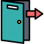

<section class="app-header">
    <nav>
        <a routerLink="" routerLinkActive="active" [routerLinkActiveOptions]="{exact:true}">
            
        </a>
        <a routerLink="contact" routerLinkActive="active" [routerLinkActiveOptions]="{exact:true}">
            
        </a>

        

        <a *ngIf="!loggedInUser; else elseBlock " routerLink="login" routerLinkActive="active"
            [routerLinkActiveOptions]="{exact:true}"></a>
    </nav>
    <ng-template #elseBlock>
        <button class="logout-btn" (click)="onLogout()"></button>
    </ng-template>
    <!-- TODO: a Button for logout Emit to login Page -->

</section>